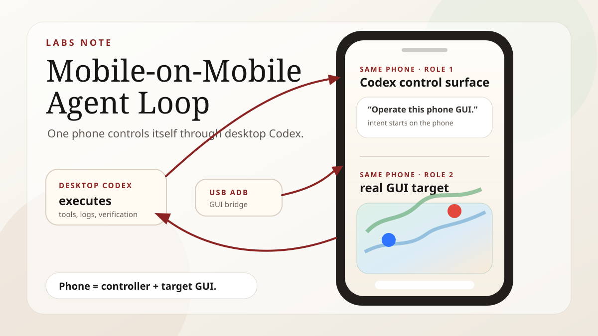
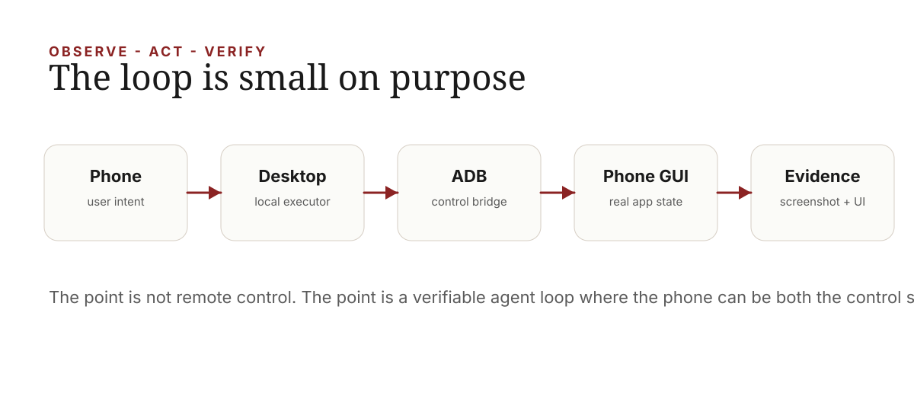
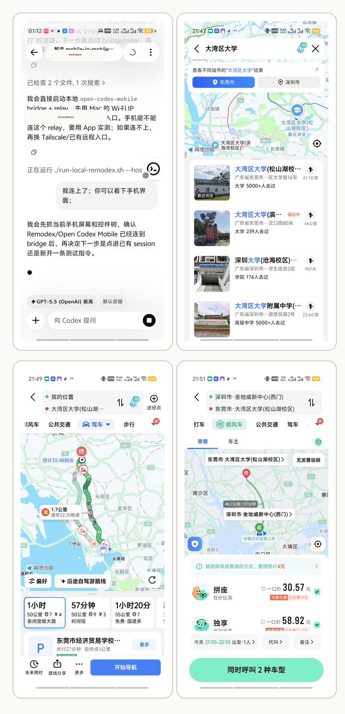

Mobile-on-Mobile Agent Loop
A small experiment where a phone-side Codex session asks desktop Codex to operate the same Android phone GUI through USB ADB.

TL;DR
This is not a product launch. It is a small Open Codex Labs experiment around a strange but useful loop: the phone can be both the agent control surface and the target GUI surface.
The user starts from a phone-side Codex session. Desktop Codex receives the task. The desktop uses USB ADB to operate the same Android phone. The phone app returns a real GUI result. Screenshots and UI state provide evidence. The answer comes back to the phone-side conversation.
In one sentence: mobile control does not have to stop at supervising a desktop agent; it can trigger a desktop agent to act on the mobile GUI itself.
The odd moment
Most mobile-agent products treat the phone as a remote control. You check status, approve commands, add context, and read the final answer. That already changes the agent workflow, because the human no longer has to sit in front of the desktop while a long task is running.
This experiment adds one more turn. The same phone that sends the instruction also becomes the thing being operated. The desktop remains the trusted execution machine, but the action surface is the Android phone GUI: a real app, a real screen, real buttons, real state.
That distinction matters. Many useful tasks live behind mobile apps, weak APIs, local permissions, or app-only interfaces. If an agent can safely operate a phone GUI with evidence, those tasks can enter an agent workflow before a clean API exists.
The loop
The implementation was deliberately simple. No special mobile automation framework was needed for the first proof. USB ADB was enough to open an app, capture screenshots, inspect UI state, tap, type, and verify the result.

| Role | What it does | Why it matters |
|---|---|---|
| Phone-side Codex | Captures user intent and receives the final result. | The phone stays the lightweight control surface. |
| Desktop Codex | Runs local tools, ADB, screenshots, and verification. | The trusted machine remains the executor. |
| USB ADB | Bridges actions into the Android GUI. | The experiment avoids network complexity and keeps the loop reproducible. |
| Same phone GUI | Provides the real app state and visual result. | The agent acts on the environment the user actually cares about. |
The demo
I used a deliberately ordinary task: open a map app on the connected phone, search for a destination, read a route or ride estimate, and stop before any irreversible action. The public screenshots keep the map flow visible; only local infrastructure details in the control screenshot are masked.
The point of the demo was not the specific route. The point was that the agent operated a real phone app and came back with evidence from the same device that initiated the request.

What this changes
The important result is not that ADB can click a phone. That has been true for years. The interesting result is the product shape: a mobile agent session can delegate execution to a desktop agent, which can then operate the same mobile GUI and report back.
That suggests a broader division of labor. The phone is good at intent, supervision, quick approval, and final reading. The desktop is good at trusted execution, local tools, files, logs, and long-running work. The phone GUI is good at representing app-only tasks that do not yet have a clean API.
Once these pieces are connected, the mobile app stops being only a chat box. It becomes a real action surface in the agent workflow.
Why I would not start with MCP
It is tempting to immediately turn this into an MCP server, a reusable skill, or a polished mobile-control product. I would not start there.
The first reusable unit is the workflow, not the protocol. The agent needs a safe rhythm: take a screenshot, inspect UI state, perform one small action, take another screenshot, stop at irreversible boundaries, and summarize the evidence. Without that rhythm, a nicer tool interface only makes unsafe automation easier.
| Layer | When it is enough | When to promote it |
|---|---|---|
| Raw ADB workflow | One phone, one experiment, human-supervised tasks. | When the steps repeat and need guardrails. |
| Skill | Codify safe operating habits and stop conditions. | When multiple agents should reuse the same procedure. |
| MCP | Expose stable tools such as screenshot, dump UI, tap, type, open app. | When several clients or devices need the same interface. |
Safety boundaries
This kind of loop should stay conservative. It is fine to open an app, search, read a result, and collect screenshots. It is not fine to silently place orders, pay, send messages, change account settings, grant new permissions, or handle sensitive content without explicit user confirmation.
The same applies to publishing traces. Phone screenshots often contain more personal data than expected: location, account state, notification icons, map context, local IPs, nearby places, and historical app state. The public artifact should be reviewed deliberately, and infrastructure details should be masked when they are not part of the point.
The story in one sentence
Mobile-on-Mobile Agent Loop is a small experiment, but it points to a useful future primitive: the phone can be the place where intent starts, the desktop can be the place where execution happens, and the same phone GUI can be the real-world surface the agent operates.
The phone is not only a remote control for agents. Sometimes it is the environment.